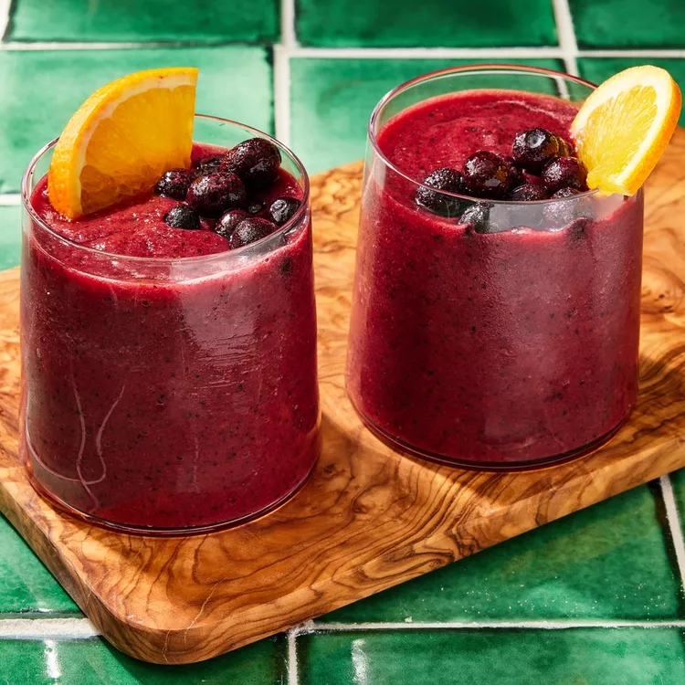

This vibrant beet smoothie combines sweet and earthy beets with berries, banana and orange juice for a well-balanced flavor. Look for packaged cooked beets where the prepared fruits and vegetables are sold. Beets are high in belatins, an antioxidant that may help decrease inflammation in the body. Other nutrient-packed ingredients add even more anti-inflammatory power, like the anthocyanins in blueberries and the gingerol found in ginger.

Combine strawberries, blueberries, orange juice, beets, banana, carrot and ginger in a blender; process until combined, about 30 seconds. Divide between 2 glasses. Serve immediately.